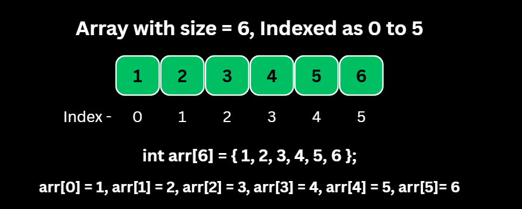
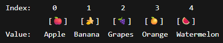
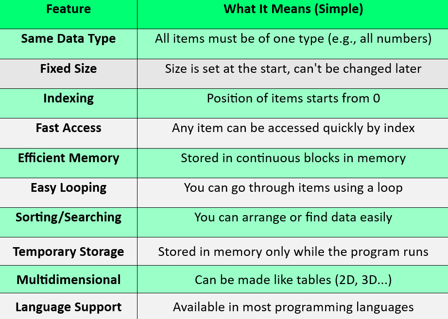
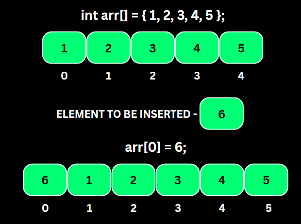
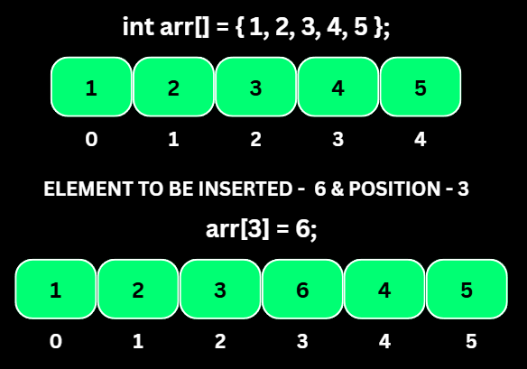
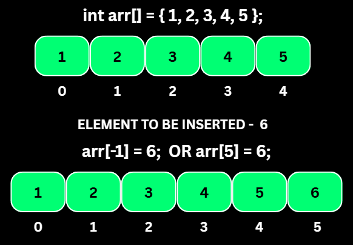
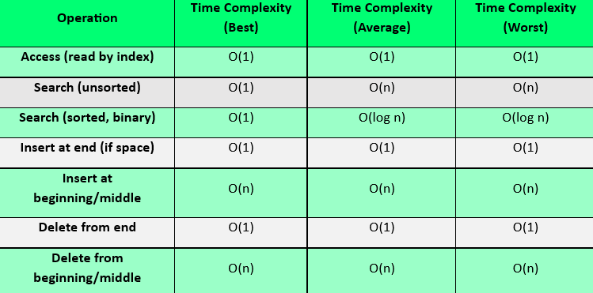

Insertion — at the beginning
The new element goes to index 0, so every existing element must shift one place right before the write. Size grows by one. This is the most expensive insert there is.
O(n)timen shiftswork
A collection of elements of the same data type stored in contiguous memory locations. Because every slot is the same width, the address of index i is pure arithmetic — which is why reaching the first element and the ten-thousandth cost exactly the same.

One unbroken block of memory, one index per slot, and a cost model you can predict exactly.
An array is a numbered row of boxes, all the same size, sitting side by side in memory.
You do not search for box number 3 — you jump straight to it, because the computer can compute where it must be: address = base + 3 × sizeof(type).
That single trick is the array's whole superpower, and also its whole weakness: to keep the row unbroken, inserting or deleting in the middle means physically shifting everything after it.
An array stores multiple values under a single name. All values must be of the same type, and each element has an index starting from 0, so a size-n array uses indices 0 … n-1.
Static arrays (int a[100]) fix their capacity at compile time. Dynamic arrays (vector, ArrayList, Python list, JS Array) allocate on the heap and double their buffer when full, which makes appending amortised O(1).
Contiguity also buys cache locality: walking an array in order is dramatically faster in practice than chasing pointers, even when both are O(n) on paper.

Insert, delete, search and sort a live array. Watch the shifting cost of a front insert, then run binary search before and after sorting to feel the difference between O(n) and O(log n).
What the contiguous-block layout gives you, and what it takes away.

The same idea in one dimension, two dimensions, fixed size or growable.
Four families of operation, and the exact reason each one costs what it costs.
The new element goes to index 0, so every existing element must shift one place right before the write. Size grows by one. This is the most expensive insert there is.
The element lands at index = position and only the tail after it shifts right. Cheaper than a front insert on average, but still linear in the worst case.
Nothing has to move: write at index = size and increment the size. A dynamic array only pays O(n) on the rare reallocation when the buffer doubles.
Removing index 0 leaves a hole, so the whole tail slides one place left and the size drops by one.
Elements after position shift left to close the gap. Deleting inside a loop is the classic accidental O(n²) — iterate backwards or filter into a new array instead.
Just decrement the size (or pop_back). Nothing shifts, nothing reallocates.
Visit index 0 through size-1 with a single counter. Contiguity makes this the most cache-friendly loop in programming.
Compare each element until a match. Works on unsorted data and is the only option when the array has no order.
Only valid on a sorted array: compare the middle, throw away half the range, repeat. 1,000,000 elements need at most 20 comparisons.
Bubble/selection/insertion sort are O(n²) and worth writing once to understand. Real code uses the library sort — introsort, Timsort or dual-pivot quicksort — at O(n log n).



Pick an operation, pick a language, copy it out. Your language choice is remembered across every page.
Access is free, order-preserving edits are not. Everything about array performance follows from that.

The syntax and templates worth keeping open in a second tab. Print this section or grab the full multi-topic sheet.
Every one of these has cost someone an interview. Open each and check yourself.
Eight problems, easy to hard, each with a one-line hint. Try it without the hint first — the hint is for when you are properly stuck, not for when you are impatient.